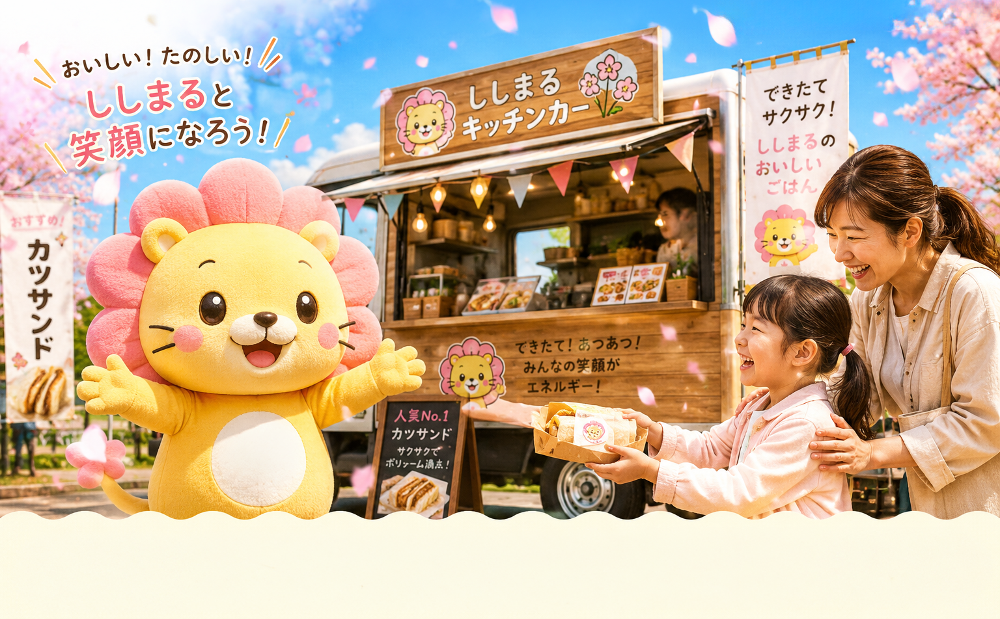

ししまる春色カレー
やさしい甘さの野菜カレー。桜色トッピングで春らしく。

春のわくわくを、まちへ。
かわいいライオンマスコット「ししまる」が、 親子で笑顔になれるごはんと安心をお届けします。
お子さまにも食べやすい、ほっとする味をそろえました。
やさしい甘さの野菜カレー。桜色トッピングで春らしく。

ふんわりパンとジューシーソーセージ。親子人気No.1。

ほんのり甘い、すっきりドリンク。イベントのおともに。

ししまるは、やさしい黄色の体にピンクの桜たてがみを持つ、 応援キャラクターのライオンです。
最新の出店スケジュールです。親子イベントにも参加中！
11:00〜16:00 / ししまる中央公園（芝生エリア）
10:30〜14:30 / さくら保育園前スペース
10:00〜17:00 / 市民イベント広場
地域インフラを支える配管工事会社が運営しています。
創業以来、給排水・空調配管の施工とメンテナンスを通して、 安心して暮らせるまちづくりに取り組んできました。 キッチンカー事業でも「安全・衛生・信頼」を大切にしています。
出店依頼・会社相談・採用エントリーなどお気軽にどうぞ。